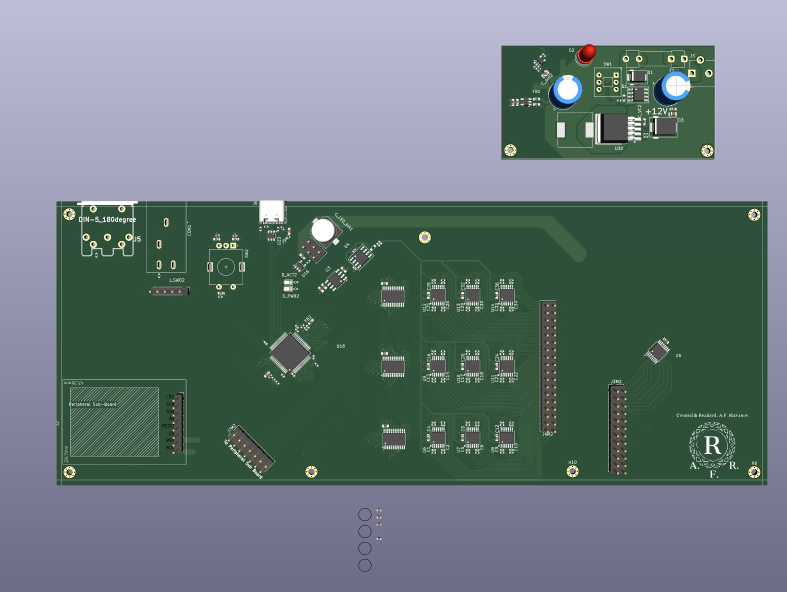

Engineering
Hardware Design & Test
I'm Anthony Rizvanov, a repair technician and self-taught hardware designer in Boston. I've been building electronics since July 2024: two original MIDI instruments, each taken from breadboard prototypes to a multi-board PCB design in KiCad, with every prototype stage documented, including the ones that failed.

Where Things Stand
October 2026
| Project | Built and tested | In design |
|---|---|---|
| TINI | 12 physical prototype stages, Jun 2025 to Mar 2026. Four worked: two switch grids that played MIDI into Logic Pro, a Velostat pressure grid on a breadboard, and a hand-etched pressure grid that drew a live heatmap. | Four-board 36 × 24 professional version in KiCad. The 8-layer motherboard is in final routing and the 6-layer, 288-cell sensor plate is laid out. Nothing fabricated yet. |
| TIMS | 9 prototype stages, Jul 2024 to Feb 2026. Three worked, including a breath-controlled prototype that played melodies with double-tongued articulation. | Four-board professional version around a Teensy 4.1: netlists and BOM complete, schematics complete for three of the four boards. Not fabricated. |
| Switch report | Component characterization of an undocumented 5-pin switch for the TIMS control panel. | — |
Projects
TINI
Tonal Intervallic Net Instrument
A pressure-sensitive grid instrument laid out as a Tonnetz, so chords and scales become shapes under the hand. The professional version interleaves three complete Tonnetz grids in one 288-cell play surface.
TINI documentationTIMS
Trumpet Instrument: MIDI Synthesizer
A MIDI instrument that plays like a trumpet: breath sets the dynamics, three valves transpose and the lips choose the partial. Built by a working jazz trumpeter for players like him.
TIMS documentationSwitch Report
Component characterization · CCR-001
A 5-pin switch arrived with no datasheet. I mapped its pins and measured contact and isolation resistance against pass criteria set before testing, then wired the control panel to the result.
Read the reportHow I Work
My day job is repair. At CPR Cell Phone Repair in Boston I diagnose and repair phones, tablets, laptops and consoles, and I run the store's parts inventory, purchasing and vendor returns. On my own time I do board-level repair and data recovery. Seeing which designs fail on the bench, and which ones can't be serviced, shapes how I lay out my own boards: the TINI power stage is moving to its own board partly so it can be repaired on its own, and the trumpet is split into four boards partly for the same reason.
I keep the whole record. Every prototype stage on these pages lists what it tested, whether it worked, and what I changed next. Most of them failed, and the failures are where the design decisions came from.
- PCB designKiCad and EasyEDA: schematic capture, netlists and ERC, multilayer layout from 2 to 8 layers, multi-board partitioning, BOM development.
- PrototypingRaspberry Pi 5 with Python, Adafruit Grand Central M4, ESP32-S2, hand-etched two-sided boards with UV-cured solder mask, Velostat pressure sensing, MIDI.
- Bench and testMultimeter diagnostics, power-rail tracing against schematics, microsoldering, hot-air rework, BGA reballing, written component characterization.
Next: First Board Order
The TINI motherboard and power board will go out as a first article, together with a small test board carrying a few sensor cells, before the large sensor plate is ordered. The bring-up plan, its pass/fail checks and the results will be published on the TINI page.
Repair Work
Five-plus years of device repair, from module-level work at a mall kiosk to board-level diagnosis and data recovery. Apple Certified Repair Technician (ACRT 300) and Samsung WISE Level 1. See the repair page.